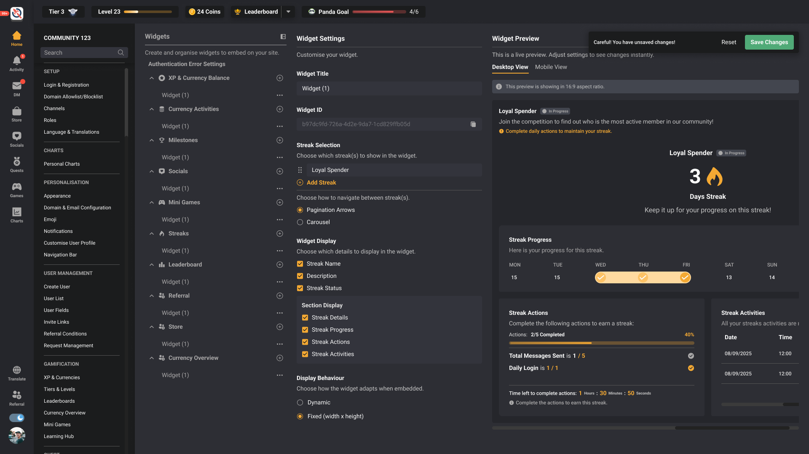

Know where truth lives
Identify which content and status come from the platform, campaign or user record.
Flagship case / platform system
Widgets needed to feel flexible without becoming ungovernable. I defined how data authority, customization and runtime state should travel from an administrative control plane into embedded experiences.
Attribution and status. I originated the widget concept, produced its Figma version and later product model, and wrote the working local output represented here. Wai Yan provided code review. A production rollout is not claimed without separate release verification.

A widget editor can easily become a collection of unrelated controls. I treated it as a contract: the platform owns some truths, operators can safely customize others, and the runtime must preserve both.
Identify which content and status come from the platform, campaign or user record.
Offer meaningful copy, styling and state controls without letting local settings contradict core behavior.
Ensure embedded surfaces resolve configuration, progress and responsive behavior consistently.
I separated platform-owned behavior from operator-authored presentation. That reduces drift: a campaign can choose the message and visual treatment, while progress, eligibility and completion remain anchored to authoritative data.
Customization is valuable when it communicates a valid state—not when it can manufacture one.
Authoritative behavior and user state.
Safe, deliberate operator choices.
One coherent widget in its host context.
A useful preview should help an operator understand how settings translate into a real state across sizes. That made responsive behavior and state fidelity part of the configuration experience rather than a late QA surprise.


The Streaks slice turned the abstract widget grammar into implementation evidence: configuration states, responsive rendering and guards against incorrectly disabled interactions.
Recorded repository evidence for the tested implementation slice.
Behavior coverage tied to the working local output.
A focused verification of whether valid states remained interactive.
These records establish implementation readiness for the reviewed slice. They do not by themselves establish production adoption, release health or business impact.